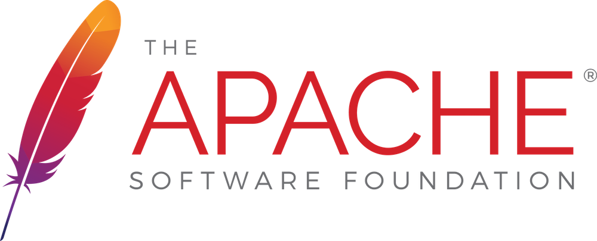
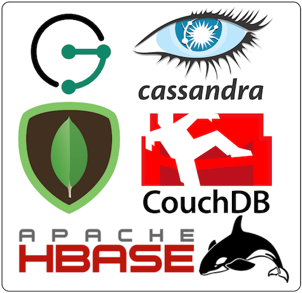
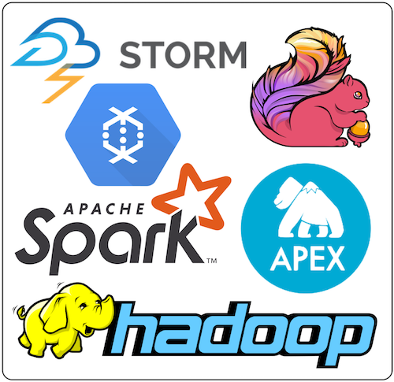
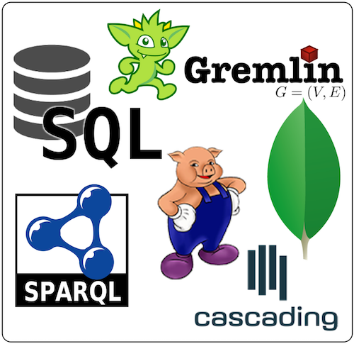
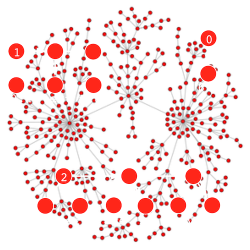
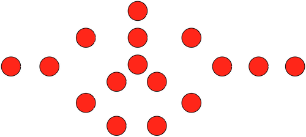
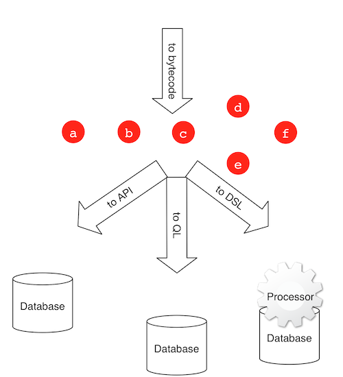

The Fabled GMachine
Marko A. Rodriguez (March 20, 2019)
The
 Over the last decade, significant advances have been made in the "data space." This is due, in part, to open source foundations such as the Apache Software Foundation (ASF) which has curated a cornucopia of application-agnostic data technology projects. The ASF maintains 24 database projects, 49 data storage and processing projects, and while not easily determined from their listing, at least 5 query language projects. The modern day software engineer is able design and develop distributed systems that were impossible for the typical engineer of preceding decades to even fathom, much less bring into being. However, while sophisticated technologies are readily and freely available, the modern engineer faces a unique challenge — managing the integration of these technologies as their respective relevances ebb and flow in synchrony with the theoretical advances and subsequent open source releases of projects which are bred, in large part, within the major data companies such as Google, Amazon, Facebook, and Twitter.
 "NoSQL" databases were designed and developed by experts in data storage, scaling, and availability. Unfortunately, for many of these projects, queryability was a periphery concern. These databases either provide a collection of language-dependent APIs (e.g. a Java, Scala, or Python library) and/or offer a simple database-specific query language with limited expressivity. While the user is secure knowing that their application will be fault tolerant and will scale beyond their needs, their code is insecurely intertwined with and fragmented by the database's various exposed integration points. Some of the application's queries are accomplished using the database's custom query language. Some of the more expressive queries require direct API access. Then there are those queries that are so compute intensive that they demand a custom "server plugin" to be deployed to the cluster (typically as a JAR file) so as to limit the movement of data between the cluster and the application. Consequently, the application's database code incorporates different data access patterns and thus, different types of test cases and maintenance procedures. The application is left tightly coupled (unnecessarily so) to the idiosyncrasies of the underlying database.
{kind=link}
 Historically, and through to today, databases have been designed for real-time, transactional processing (OLTP). Individual queries are expected to only access, filter, aggregate, and return a limited amount of data. This expectation ensures sub-second return times. For queries that access a significant amount of data, an auxiliary batch or stream processor is leveraged (OLAP) and the engineer is responsible for yet another data access pattern. A decade ago, OLAP processing meant integrating the monolithic Apache Hadoop project and managing the infrastructure complexities associated with its custom cluster-oriented file system (HDFS). Over the last five years or so, Apache Spark has risen to become a major player in the batch analytics space due in part to its in-memory processing capabilities and its simple fluent DSL. These two batch processors have reigned as the staples of most every data application. However, this is currently changing given the rapidly emerging stream computing space and its abundance of competing projects such as Apache Storm, Apache Flink, Apache Nemo, Apache Apex, and many (many) others. Application engineers that originally wrote extensive libraries of Java-specific Hadoop-based MapReduce jobs transitioned to using the more convenient fluent DSL of Spark and now are needing to study and integrate with the latest stream processor project. Integration not only requires writing custom data processing logic, but also requires developing bindings between the processor and the data source (database). All the while, with each passing year, it is possible that the engineer's chosen batch/stream-technology will need to be replaced as new processors emerge on the scene.
{kind=link}
 Every sufficiently complex language (i.e. those supporting some form of recursion, branching, and state) is considered universal. A universal language can express any computation that any other universal language can express. For this reason, it is generally believed that the universal SQL query language is sufficient for all data processing needs — from real-time database querying to offline analytics. Application developers have a significant burden lifted from their shoulders when choosing SQL-compliant data technologies. Their applications are no longer coupled to technology-specific APIs and query languages (save for an insignificant amount of "connection code") and their SQL knowledge naturally transfers to all SQL-supporting technologies. Unfortunately, few modern data technologies have adopted SQL. The primary reasons are 1) the underlying data structure is not conveniently manipulated using the table/row-semantics of SQL (e.g. MongoDB [documents] and JanusGraph [graph]), 2) the complexities of compiler and execution plan development are too difficult to implement for technologists not versed in language theory and 3) the originally provided APIs and/or simple query language have sufficiently engrained themselves in the user community via their documentation, tutorials, template projects, etc. With respects to (1), while SQL is a universal language, its semantics are not fit for all data processing tasks. In analogy to the numerous programming languages in existence today (with many atop the JVM), there will always be new query languages focused on succinctly expressing particular types of queries (e.g. graph traversals, matrix operations, time-series analyses, etc.). The modern application engineer can no longer sit comfortably only knowing SQL. Their skills and developed applications must continuously adapt to the changing APIs and query languages of the time.
{kind=link}
Data technology projects will continue to be developed. There will be more databases, there will be more processors, and there will be more query and programming languages. The landscape will change, indefinitely. However, what is not changing (or at least is changing at a much slower pace) is the theoretical foundation on which these technologies are based. Category theory exposes the similarities and morphisms between data structures, stream theory unifies the semantics of both unbounded and bounded (batch) analytics, and Turing Completeness renders all languages of a certain complexity interchangeable. GMachine focuses on the theory of computing so that when the technology landscape shifts (as it ultimately will), it will be poised to capitalize on the latest advances. To the application engineer, GMachine is a computer. Much like hard drives (databases), GPUs (processors), and compilers (languages) can be swapped on a physical computer with the entailed effects being realized in the machine's time and space performance characteristics, so to does GMachine provide the engineer consistency through the constant flux of advances made in the data space.

A data structure is an amalgamation of inter-related data. An individual datum may be a pointer, a boolean, an integer, a floating point number, a character string, etc. While these primitives are data structures in and of themselves, at the level at which most computing machines are manipulated, such primitives are considered the lowest level demarcations of distinction — they are the "bits" for creating higher order structures. As such, higher order data structures are simply different ways in which values are organized by pointers. This organization can be abstractly modeled as a graph, where values are vertices and edges are pointers. The relationship between different types of graphically-defined data structures can be understood using category theory. Category theory is a theory of form. A data structure can be demonstrated (via morphisms) to be a generalization of, a specialization of, or equivalent to some other data structure. For instance, a linked list can be graphically modeled as a linear chain of vertices each having a value() vertex and corresponding edge to the next() adjacent vertex in the chain. A map is a list of entry vertices each maintaining edges to respective key() and value() vertices. A relational database table is a list of maps. A row is a map with each key() denoting the column and each value() denoting the particular row/column-entry. A document is a (potentially nested) map of values, lists, and maps. Even within the graph space, where different representations abound, the various RDF and property graph formats can be losslessly mapped to each other. Thus, the concepts of a list, a map, a table, a row, a document, a graph, etc. are all simply terms referring to recurring value/pointer-patterns within the GStructure.
{kind=link}

A data structure is manipulated by a process. A process is a list of instructions generally understood to be functions that transform an input (argument) to an output (result). Every process can be represented as a graph, where the vertices denote functions and the edges represent the communication channels (or streams) between functions. Data flows through the process graph, where the interconnected functions map, filter, aggregate, and ultimately yield a result. For instance, to access the the first element of a list identified by the id 1, the function get(1) is evaluated. The function next() maps the current list element to its adjacent element. Finally, the value of an element is retrieved via value(). The concatenation of functions is itself a function and thus, the function get(1).next().next().value() retrieves the value of the third element of the list. Recent theoretical advances in stream computing have unified the seemingly disparate domains of serial/parallel, local/distributed, and stream/batch processing. This generalization has been realized in Apache Beam's unified stream programming model. The concepts of OLTP, OLAP, real-time, offline, etc. now seamlessly blur into one another. Moreover, any stream processor whose process graph (execution plan) can be represented as a directed acyclic graph has been proven to support universal computation. From real-time database queries to large-scale extractions, transformations, analytics, and loads, all common data processing patterns can be realized as process graphs of the GProcess.
{kind=link}

A query or programming language is any human readable/writable language capable of describing processes that create and manipulate data structures. A compiler translates human code to an execution plan aimed at the specific API of the executing database or processor. To decouple the language (and compiler) from the underlying data technology, an intermediate bytecode specification can be used. Bytecode is a portable, technology-agnostic definition of a process graph. Language compilers translate human readable/writeable code to bytecode and then the underlying data technology translates the bytecode to an execution plan tailored to its API or query language. For instance, the 4-step list access bytecode function get(1).next().next().value() may be optimized to the single API call get[1][2] if the underlying database supports direct list access. Any language that can compile to the standardized bytecode specification can automatically execute against any bytecode-supporting database or processor. The application engineer can then choose a language to use based on their expertise, the types of data structures they plan to manipulate, and the types of algorithms they intend to execute. Moreover, using the same language, the engineer can execute both real-time database queries and long-running analytical jobs while remaining confident that the next generation data technologies will support (or will be made to support) the common bytecode specification known as the GLanguage.
{kind=link}
Database technologies like Redis and Apache Ignite, stream technologies like Apache Beam, and language technologies like Apache TinkerPop's Gremlin and Apache Calcite are pushing for agnosticism in their respective domains. While not explicitly stated, their collective goal points towards a data technology that supports the processing of any data structure, using any processor, controlled by any query language. To date, no such system currently unifies all these concepts into a universal distributed computing machine. One machine that could accomplish this is the fabled GMachine.